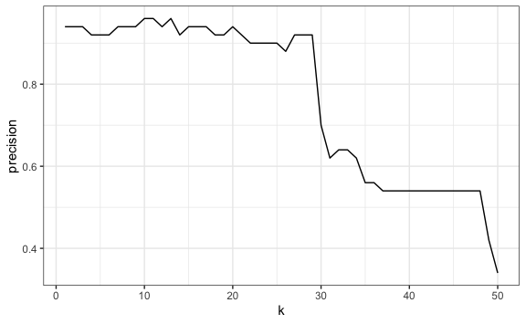
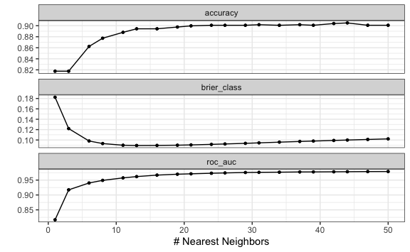
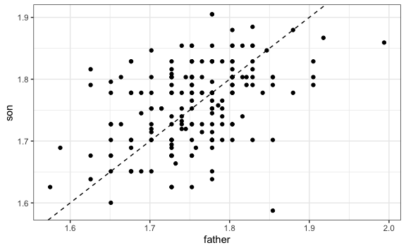
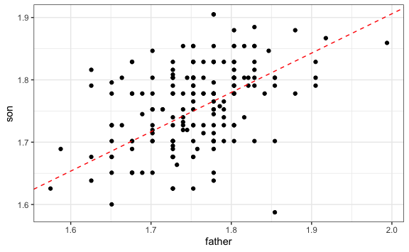

Chapter 12 Supervised Learning
To understand supervised learning intuitively, we will use a daily example. We have all been to the doctor and at some point told them that we have a sore throat, headache, and fever. They will ask us a few more questions and then tell us what illness we might have and what treatment to follow.
Intuitively, we know that the doctor had to train initially from classes and books showing past cases, and study which symptoms are signs of each disease. Then, they started to test what they learned on a group of patients during their internship. Finally, when they were already trained, they had the license to be able to apply this learning to patients in their office or hospital.
This is an example of supervised learning because the training was performed from known data or inputs which are labeled (sore throat, headache, fever) with the purpose of obtaining a result or output that was also known and labeled (do they have the flu or not?). When a doctor tests what they learned, the patient inputs are known and also the output given by a more experienced doctor who can say how effective their training is. When the doctor goes out to see patients, they will only have labeled inputs with the purpose of predicting a labeled output.
This is the logic that has been taken to computational algorithms. We can see it on Facebook, which collects a series of inputs, such as our likes, shares, etc., to predict what we might want to consume and shows it to us as a recommendation. And we will also see it in our work environment when we have inputs from our clients, such as consumption, purchasing power, place where they live, etc., to predict which of our products we predict they are more prone to buy and thus call them to offer that product.
12.1 Classification and Regression
There are multiple supervised learning algorithms, but we will differentiate them into two according to the type of variable we handle.
When the variable is discrete, we will call them classification. The examples above are proof of this. We have classified into two classes (flu or not) or several classes (product “x” to recommend).
When the variable is continuous, we will call them regression. Predicting house prices given the characteristics of the house such as size, price, etc. is one of the common examples of regression.
In the following sections, we will learn some algorithms indicating whether they are classification or regression.
12.2 kNN: k-Nearest Neighbors
Let’s start with a simple but very useful classification algorithm, the k-Nearest Neighbors algorithm (kNN).
12.2.1 Two variables as input
Let’s start by understanding it visually. Imagine that we have two variables as input and as output it gives us whether it is Red Class or Blue Class. This data is our training data.

Now that we have our training data, we will start using the test data. As we want to predict the class, the output, we will see how one of these data points would look visually and paint it yellow. Next, we calculate the distance between this point and the other data points.

We have traced only some distances, but we could do it with all of them. For this example, we will take the k = 3 nearest neighbors.

We notice that if we focus only on the 3 nearest neighbors, there are more reds than blues, so our prediction will be that this point must be Class R (red).
Calculating the distance on a Cartesian plane is relatively simple, we only have variables as input: on the x-axis and y-axis. However, the same logic can be taken to more variables.
12.2.2 Multiple variables as input
Let’s see how it would be with 4 variables as input. We are going to work again with the iris data frame, which, as we will recall, has 4 attributes of a plant and the last column is the species to which it belongs.
data(iris)
iris |>
head(10)
#> Sepal.Length Sepal.Width Petal.Length Petal.Width Species
#> 1 5.1 3.5 1.4 0.2 setosa
#> 2 4.9 3.0 1.4 0.2 setosa
#> 3 4.7 3.2 1.3 0.2 setosa
#> 4 4.6 3.1 1.5 0.2 setosa
#> 5 5.0 3.6 1.4 0.2 setosa
#> 6 5.4 3.9 1.7 0.4 setosa
#> 7 4.6 3.4 1.4 0.3 setosa
#> 8 5.0 3.4 1.5 0.2 setosa
#> 9 4.4 2.9 1.4 0.2 setosa
#> 10 4.9 3.1 1.5 0.1 setosaThe idea is as follows, we will take training data, 50 data points. From this data, we have the 4 input attributes and the last column is the output, the species. We will use the kNN algorithm taking this training data as input to create our model. Then, with testing data, another 50 data points, we will test our model.
Let’s start by taking a random sample of 100 records and separate half for training and half for testing. Since we have 150 data points in our data frame, let’s take a sample of the indices. In this case, we are going to use the set.seed(n) function to force the random sample values to be the same always. Thus, we can all obtain the same results and the explanation in the book in these chapters is consistent with the results that each reader obtains. For a real exercise, we should not include that line. It is recommended to read the documentation ?set.seed().
# 28 is the author's birthday
set.seed(28)
sample_idx <- sample(150, 100)
train_idx <- sample(sample_idx, 50)
test_idx <- sample_idx[!sample_idx %in% train_idx]Now that we have the indices we can build our training data and our test.
iris_train <- iris[train_idx, ]
iris_test <- iris[test_idx, ]
iris_train_input <- iris_train[, -5]
iris_train_output <- iris_train[, 5]
iris_test_input <- iris_test[, -5]
iris_test_output <- iris_test[, 5]Although we could build the algorithms to calculate the minimum distances for each point, R provides us with libraries that facilitate the creation of these models. To do this, we will load the class library, which will allow us to execute kNN quickly.
This library provides us with the knn() function, which will take the training data to create the model and once the model is created it will take the test data to predict the output for our test data.
iris_test_output_kNN <- knn(train = iris_train_input,
cl = iris_train_output,
test = iris_test_input,
k = 3)
iris_test_output_kNN
#> [1] versicolor versicolor versicolor versicolor setosa versicolor
#> [7] virginica virginica virginica virginica versicolor versicolor
#> [13] virginica versicolor versicolor versicolor setosa versicolor
#> [19] versicolor virginica virginica setosa versicolor versicolor
#> [25] versicolor virginica setosa setosa versicolor versicolor
#> [31] virginica setosa setosa virginica virginica setosa
#> [37] setosa virginica setosa versicolor setosa virginica
#> [43] setosa setosa setosa virginica virginica versicolor
#> [49] virginica versicolor
#> Levels: setosa versicolor virginicaThus, the knn function throws us the prediction just by entering the training data as attributes, the test inputs, and how many nearest neighbors it will look for (k). And not only that, we can compare our prediction with the test output to see how accurate (accuracy) our model is. To do this, we calculate the percentage of correct predictions regarding the test output.
In addition, we can place a summary in a table, also known as a confusion matrix, to see how many predicted values were equal to the real ones using the table() function.
table(iris_test_output_kNN, iris_test_output)
#> iris_test_output
#> iris_test_output_kNN setosa versicolor virginica
#> setosa 14 0 0
#> versicolor 0 18 2
#> virginica 0 1 15Let’s interpret this result cell by cell:
- Our kNN model predicted 14 values as species “setosa” and it turns out that in our test the real value, output, was also setosa.
- Our model predicted 20 as species versicolor. However, in the real-test data, of those 20, only 18 are versicolor and 2 are virginica.
- Our model predicted 16 as species virginica. However, in the real-test data, of those 16, only 15 are virginica.
12.2.3 Diverse values of k
So far we have only used a single value for k, 3 nearest neighbors. However, we could see the accuracy for different values of k. Since we have 50 values in our training data, we will see the hits taking a maximum of 50 nearest neighbors.
k <- 1:50
result_df <- data.frame(k, precision = 0)
for(n in k){
iris_test_output_kNN <- knn(train = iris_train_input,
cl = iris_train_output,
test = iris_test_input,
k = n)
result_df$precision[n] <- mean(iris_test_output_kNN == iris_test_output)
}
result_df |>
ggplot() +
aes(k, precision) +
geom_line()
As we can see, for this case, starting from a certain number of nearest neighbors, the success rate of our algorithm begins to reduce. It will depend on each case to choose the best “k” for our model.
We have thus built our first machine learning model.
12.3 tidymodels Framework
Now that we have created our first machine learning model, we have seen ourselves with many lines of code. For example, to split the sample into training and test, to calculate the optimal “k”, etc. To make the work easier, we will use the tidymodels framework. tidymodels14 is a collection of packages for modeling and machine learning using tidyverse principles. It provides a unified, modern interface for:
- rsample: Data splitting and resampling
- recipes: Feature engineering and preprocessing
- parsnip: Unified model specification
- tune: Hyperparameter tuning
- yardstick: Model evaluation metrics
- workflows: Bundling recipes and models together
library(tidymodels)
#> ── Attaching packages ─────────── tidymodels 1.4.1 ──
#> ✔ broom 1.0.11 ✔ tailor 0.1.0
#> ✔ dials 1.4.2 ✔ tune 2.0.1
#> ✔ infer 1.1.0 ✔ workflows 1.3.0
#> ✔ parsnip 1.4.0 ✔ workflowsets 1.1.1
#> ✔ recipes 1.3.1 ✔ yardstick 1.3.2
#> ✔ rsample 1.3.1
#> ── Conflicts ────────────── tidymodels_conflicts() ──
#> ✖ NLP::annotate() masks ggplot2::annotate()
#> ✖ rsample::calibration() masks caret::calibration()
#> ✖ scales::discard() masks purrr::discard()
#> ✖ Matrix::expand() masks tidyr::expand()
#> ✖ dplyr::filter() masks stats::filter()
#> ✖ recipes::fixed() masks stringr::fixed()
#> ✖ dplyr::lag() masks stats::lag()
#> ✖ caret::lift() masks purrr::lift()
#> ✖ Matrix::pack() masks tidyr::pack()
#> ✖ rsample::permutations() masks gtools::permutations()
#> ✖ yardstick::precision() masks caret::precision()
#> ✖ dials::prune() masks dendextend::prune()
#> ✖ yardstick::recall() masks caret::recall()
#> ✖ yardstick::sensitivity() masks caret::sensitivity()
#> ✖ yardstick::spec() masks readr::spec()
#> ✖ yardstick::specificity() masks caret::specificity()
#> ✖ recipes::step() masks stats::step()
#> ✖ Matrix::unpack() masks tidyr::unpack()
#> ✖ recipes::update() masks Matrix::update(), stats::update()We are going to do another example with k-nearest neighbors, but this time using the functions of the Caret library. The data for this example will be obtained from the ISLR library, which contains the daily percentage returns for the S&P 500 stock index between 2001 and 2005. This data frame has 8 columns that we will use as input and the last column that has two classes (whether the index goes up or down) that we will use as output (See ?Smarket).
library(ISLR)
data(Smarket)
# Data frame that we will use
Smarket |>
head(10)
#> Year Lag1 Lag2 Lag3 Lag4 Lag5 Volume Today Direction
#> 1 2001 0.381 -0.192 -2.624 -1.055 5.010 1.1913 0.959 Up
#> 2 2001 0.959 0.381 -0.192 -2.624 -1.055 1.2965 1.032 Up
#> 3 2001 1.032 0.959 0.381 -0.192 -2.624 1.4112 -0.623 Down
#> 4 2001 -0.623 1.032 0.959 0.381 -0.192 1.2760 0.614 Up
#> 5 2001 0.614 -0.623 1.032 0.959 0.381 1.2057 0.213 Up
#> 6 2001 0.213 0.614 -0.623 1.032 0.959 1.3491 1.392 Up
#> 7 2001 1.392 0.213 0.614 -0.623 1.032 1.4450 -0.403 Down
#> 8 2001 -0.403 1.392 0.213 0.614 -0.623 1.4078 0.027 Up
#> 9 2001 0.027 -0.403 1.392 0.213 0.614 1.1640 1.303 Up
#> 10 2001 1.303 0.027 -0.403 1.392 0.213 1.2326 0.287 Up
# We make some translations for ease of analysis
Smarket <- Smarket |>
rename(Direction = Direction) |>
mutate(Direction = ifelse(Direction == "Up", "Sube", "Baja")) |>
mutate(across(c("Direction"), ~as.factor(.)))12.3.1 Creation of training and test data
From the total of our data frame, we will split a part of the data for training and the other to do the tests. tidymodels provides the initial_split() function from the rsample package which creates a clean split object. We allocate 75% of the data for training using the prop argument, and we can use strata to ensure balanced class distribution.
set.seed(28)
data_split <- initial_split(Smarket, prop = 0.75, strata = Direction)
SP_train <- training(data_split)
SP_test <- testing(data_split)
# Check the split
nrow(SP_train)
#> [1] 937
nrow(SP_test)
#> [1] 313This function makes sampling data much simpler and returns a split object that we can use with training() and testing() accessor functions.
12.3.2 Training our prediction algorithm
In tidymodels, we build models in a structured way using three key components:
1. Model specification (parsnip): Define the type of model and its engine
2. Recipe (recipes): Define preprocessing steps
3. Workflow (workflows): Bundle recipe and model together
Let’s start by specifying our k-nearest neighbors model. We use tune() as a placeholder for the neighbors parameter to indicate we want to find the optimal value.
12.3.3 Data Pre-processing with Recipes
tidymodels uses recipes for preprocessing. The scale method (division by standard deviation) and centering (subtraction of the mean) are implemented with step_normalize().
# Define preprocessing recipe
knn_recipe <- recipe(Direction ~ ., data = SP_train) |>
step_normalize(all_numeric_predictors())
knn_recipe
#>
#> ── Recipe ───────────────────────────────────────────
#>
#> ── Inputs
#> Number of variables by role
#> outcome: 1
#> predictor: 8
#>
#> ── Operations
#> • Centering and scaling for:
#> all_numeric_predictors()12.3.4 Creating a Workflow
A workflow bundles the recipe and model specification together for easy training and prediction.
# Bundle into workflow
knn_workflow <- workflow() |>
add_recipe(knn_recipe) |>
add_model(knn_spec)
knn_workflow
#> ══ Workflow ═════════════════════════════════════════
#> Preprocessor: Recipe
#> Model: nearest_neighbor()
#>
#> ── Preprocessor ─────────────────────────────────────
#> 1 Recipe Step
#>
#> • step_normalize()
#>
#> ── Model ────────────────────────────────────────────
#> K-Nearest Neighbor Model Specification (classification)
#>
#> Main Arguments:
#> neighbors = tune()
#>
#> Computational engine: kknn12.3.5 Parameter Tuning with Cross-Validation
One of the most important parts of training machine learning models is tuning the parameters. We use vfold_cv() to create cross-validation folds and tune_grid() to search for the best hyperparameters.
set.seed(28)
# Create 5-fold cross-validation
folds <- vfold_cv(SP_train, v = 5, strata = Direction)
# Create a grid of k values to try
k_grid <- grid_regular(neighbors(range = c(1, 50)), levels = 20)
# Tune the model
knn_tune_results <- tune_grid(
knn_workflow,
resamples = folds,
grid = k_grid
)
#>
#> Attaching package: 'kknn'
#> The following object is masked from 'package:caret':
#>
#> contr.dummy
knn_tune_results
#> # Tuning results
#> # 5-fold cross-validation using stratification
#> # A tibble: 5 × 4
#> splits id .metrics .notes
#> <list> <chr> <list> <list>
#> 1 <split [748/189]> Fold1 <tibble [60 × 5]> <tibble [0 × 4]>
#> 2 <split [750/187]> Fold2 <tibble [60 × 5]> <tibble [0 × 4]>
#> 3 <split [750/187]> Fold3 <tibble [60 × 5]> <tibble [0 × 4]>
#> 4 <split [750/187]> Fold4 <tibble [60 × 5]> <tibble [0 × 4]>
#> 5 <split [750/187]> Fold5 <tibble [60 × 5]> <tibble [0 × 4]>We can visualize the tuning results using autoplot():

We can see the accuracy for each value of “k”. The show_best() function shows us the top performing values:
show_best(knn_tune_results, metric = "accuracy")
#> # A tibble: 5 × 7
#> neighbors .metric .estimator mean n std_err .config
#> <int> <chr> <chr> <dbl> <int> <dbl> <chr>
#> 1 44 accuracy binary 0.905 5 0.0114 pre0_mod18_post0
#> 2 42 accuracy binary 0.904 5 0.0116 pre0_mod17_post0
#> 3 37 accuracy binary 0.902 5 0.0115 pre0_mod15_post0
#> 4 31 accuracy binary 0.902 5 0.0112 pre0_mod13_post0
#> 5 47 accuracy binary 0.901 5 0.0119 pre0_mod19_post012.3.6 Finalizing the Model
Once we’ve found the best hyperparameters, we finalize our workflow with those values:
# Select the best k value
best_k <- select_best(knn_tune_results, metric = "accuracy")
best_k
#> # A tibble: 1 × 2
#> neighbors .config
#> <int> <chr>
#> 1 44 pre0_mod18_post0
# Finalize the workflow with the best parameters
final_knn_workflow <- finalize_workflow(knn_workflow, best_k)
# Fit the final model on the entire training set
SP_knn_trained <- fit(final_knn_workflow, data = SP_train)
SP_knn_trained
#> ══ Workflow [trained] ═══════════════════════════════
#> Preprocessor: Recipe
#> Model: nearest_neighbor()
#>
#> ── Preprocessor ─────────────────────────────────────
#> 1 Recipe Step
#>
#> • step_normalize()
#>
#> ── Model ────────────────────────────────────────────
#>
#> Call:
#> kknn::train.kknn(formula = ..y ~ ., data = data, ks = min_rows(44L, data, 5))
#>
#> Type of response variable: nominal
#> Minimal misclassification: 0.0864461
#> Best kernel: optimal
#> Best k: 44We see the substantial improvement now that we have adjusted some parameters and made it reprocess first. Note that each time we adjust parameters, the value of “k” can change until the most optimal one is found. In this case, it changed to k = 29. This does not mean that the lower the “k”, the better the algorithm, only that it is the most optimal for this particular case with these adjustments made.
12.3.7 Testing the prediction model
We already have our model trained and ready to test it. tidymodels makes it easy to make predictions using the augment() function which adds predictions directly to our test data.
# Make predictions on test data
SP_predictions <- augment(SP_knn_trained, new_data = SP_test)
# View predictions
SP_predictions |>
select(Direction, .pred_class, .pred_Baja, .pred_Sube) |>
head(10)
#> # A tibble: 10 × 4
#> Direction .pred_class .pred_Baja .pred_Sube
#> <fct> <fct> <dbl> <dbl>
#> 1 Sube Sube 0.243 0.757
#> 2 Sube Sube 0.404 0.596
#> 3 Baja Baja 0.611 0.389
#> 4 Baja Baja 0.977 0.0231
#> 5 Sube Sube 0.230 0.770
#> 6 Baja Sube 0.472 0.528
#> 7 Baja Baja 0.955 0.0447
#> 8 Sube Sube 0.0361 0.964
#> 9 Baja Baja 0.522 0.478
#> 10 Baja Baja 1 0The augment() function adds three columns: .pred_class (the predicted class), and probability columns for each class (.pred_Baja and .pred_Sube). This makes it very easy to compare predictions with actual values.
As we can see, for each test value the model calculates the estimated probability for each class. The algorithm assigns the class with the highest probability.
12.3.8 Model Evaluation with yardstick
To evaluate our model, we use the yardstick package. The conf_mat() function creates a confusion matrix, and we can calculate various metrics like accuracy, sensitivity, and specificity.
# Confusion matrix
SP_predictions |>
conf_mat(truth = Direction, estimate = .pred_class)
#> Truth
#> Prediction Baja Sube
#> Baja 132 4
#> Sube 19 158
# Calculate accuracy
SP_predictions |>
accuracy(truth = Direction, estimate = .pred_class)
#> # A tibble: 1 × 3
#> .metric .estimator .estimate
#> <chr> <chr> <dbl>
#> 1 accuracy binary 0.927
# Calculate multiple metrics at once
SP_predictions |>
metrics(truth = Direction, estimate = .pred_class)
#> # A tibble: 2 × 3
#> .metric .estimator .estimate
#> <chr> <chr> <dbl>
#> 1 accuracy binary 0.927
#> 2 kap binary 0.852We obtain the accuracy as well as other metrics. The yardstick package provides many evaluation functions including sens() (sensitivity), spec() (specificity), precision(), recall(), and more.
12.4 Confusion Matrix
We have already used confusion matrices in our two previous examples. Now it is our turn to properly understand its definition as well as some of the evaluation metrics of this matrix.
A confusion matrix, also known as an error matrix, allows us to visualize the performance of an algorithm, generally a supervised learning one (in unsupervised learning it is generally called a matching matrix). Each row of the matrix represents the instances in a predicted class, while each column represents the instances in a real class (or vice versa). The name derives from the fact that it makes it easy to see if the system confuses two classes (i.e., commonly mislabeling one as another).
Binary classifications, when the outcome can take only two classes, yield this following confusion matrix.

12.4.1 Accuracy
We have already been using this term in our examples. The accuracy of the model can be calculated from the confusion matrix:
\(Accuracy=\frac{VP+VN}{VP+VN+FP+FN}\)
The accuracy of the model is the proportion of times the algorithm predicted correctly, regarding the total data evaluated.
12.4.2 Sensitivity
Sensitivity (also called true positive rate, recall, or probability of detection in some fields) measures the proportion of real positives that are correctly identified as such (for example, the percentage of sick people who are correctly identified as having the condition).
\(Sensitivity=\frac{VP}{VP+FN}\)
12.5 Exercises
- Using the tidymodels library, partition the
irisdata frame in such a way as to have 70% training data and 30% test data.
Solution
- Using tidymodels and the training data obtained in the previous exercise, create a k-nearest neighbor model with tuning. Plot the result.
Solution
# Model specification
iris_knn_spec <- nearest_neighbor(neighbors = tune()) |>
set_engine("kknn") |>
set_mode("classification")
# Recipe with preprocessing
iris_recipe <- recipe(Species ~ ., data = iris_train) |>
step_normalize(all_numeric_predictors())
# Workflow
iris_workflow <- workflow() |>
add_recipe(iris_recipe) |>
add_model(iris_knn_spec)
# Cross-validation and tuning
iris_folds <- vfold_cv(iris_train, v = 5)
iris_tune <- tune_grid(iris_workflow, resamples = iris_folds, grid = 20)
autoplot(iris_tune)- Use the model created in the previous exercise to predict the outputs of the
testobject. Report the confusion matrix.
Solution
# Finalize model with best k
best_k <- select_best(iris_tune, metric = "accuracy")
final_iris_wf <- finalize_workflow(iris_workflow, best_k)
iris_fit <- fit(final_iris_wf, data = iris_train)
# Predict and evaluate
iris_predictions <- augment(iris_fit, new_data = iris_test)
iris_predictions |> conf_mat(truth = Species, estimate = .pred_class)12.6 Simple Linear Regression
Now we have to predict on continuous variables, the supervision algorithms for these cases are called regression.
To understand linear regression we are going to start with an example with a single variable as input, this is known as Simple Linear Regression. To do this we are going to use data from the HistData library where we will find a dataset that enumerates the individual observations of 934 children in 205 families stored in the object GaltonFamilies.
library(HistData)
data(GaltonFamilies)
# We make some filters to have one dad and one son per family
heights_df <- GaltonFamilies |>
filter(gender == "male") |>
group_by(family) |>
slice_sample(n = 1) |> # random sample of 1 son per family
ungroup() |>
select(father, childHeight) |>
rename(son = childHeight, father = father) |>
mutate(father = father/39.37) |> # From inches to meters
mutate(son = son/39.37) # From inches to metersVisually we could see if there is a relationship between the heights of dad and son:

As we can see, there is a positive correlation, such that the taller the father, the son grows to be taller as an adult. This line, however, is nothing more than a default line. The challenge lies in finding which line minimizes the distance of the points to this line, known as error minimization.
We could try to predict the height the son will have from the father’s height using the equation of this line:
\(Y = \beta_0+\beta_1X\)
Where \(X\) is an independent, explanatory variable, in this case the dad’s height. \(\beta_1\) is a parameter that measures the influence that the explanatory variable has on the dependent variable \(Y\) and \(\beta_0\) is the intercept or constant term. In our case, the son’s height.
In statistics, linear regression or linear adjustment is a mathematical model used to approximate the dependency relationship between a dependent variable \(Y\) and the independent variables \(X_i\).
Thus, our problem boils down to training our model to find the values of the intercept, \(\beta_0\), and the value of the parameter accompanying \(X_1\), \(\beta_1\), to then use these data as prediction in our test data.
heights_split <- initial_split(heights_df, prop = 0.5)
heights_train <- training(heights_split)
heights_test <- testing(heights_split)Now that we have our data we can train our model using tidymodels. We specify a linear regression model with linear_reg().
# Model specification
lm_spec <- linear_reg() |>
set_engine("lm") |>
set_mode("regression")
# Recipe
lm_recipe <- recipe(son ~ father, data = heights_train)
# Workflow
lm_workflow <- workflow() |>
add_recipe(lm_recipe) |>
add_model(lm_spec)
# Cross-validation
heights_folds <- vfold_cv(heights_train, v = 10)
lm_results <- fit_resamples(lm_workflow, resamples = heights_folds)
# View results
collect_metrics(lm_results)
#> # A tibble: 2 × 6
#> .metric .estimator mean n std_err .config
#> <chr> <chr> <dbl> <int> <dbl> <chr>
#> 1 rmse standard 0.0584 10 0.00362 pre0_mod0_post0
#> 2 rsq standard 0.362 10 0.0821 pre0_mod0_post0We see as main results the RMSE, which stands for root mean square error, and is the value that linear regression seeks to minimize. In addition, we have the R squared or \(R^2\), which is the coefficient of determination which determines the quality of the model to replicate the results. The higher and closer to 1, the better the quality of the model.
Now let’s fit the final model and make predictions:
# Fit final model
heights_fit <- fit(lm_workflow, data = heights_train)
# Make predictions
heights_predictions <- augment(heights_fit, new_data = heights_test)
# Calculate RMSE
heights_predictions |>
rmse(truth = son, estimate = .pred)
#> # A tibble: 1 × 3
#> .metric .estimator .estimate
#> <chr> <chr> <dbl>
#> 1 rmse standard 0.0642If we wish we can also report the coefficients of the equation and visualize them:
\(Y = \beta_0+\beta_1X\)
# Extract model coefficients
heights_fit |> extract_fit_parsnip() |> tidy()
#> # A tibble: 2 × 5
#> term estimate std.error statistic p.value
#> <chr> <dbl> <dbl> <dbl> <dbl>
#> 1 (Intercept) 0.644 0.183 3.51 0.000708
#> 2 father 0.631 0.104 6.05 0.0000000361
model_coefs <- heights_fit |> extract_fit_parsnip() |> tidy()
intercept_val <- model_coefs$estimate[1]
slope_val <- model_coefs$estimate[2]
#Visualization
heights_df |>
ggplot() +
aes(father, son) +
geom_point() +
geom_abline(lty = 2, intercept = intercept_val, slope = slope_val, color = "red")
12.7 Multiple Linear Regression
Now that we know linear regression we can execute a multiple linear regression model, which involves more than 1 variable as input. To do this, we will use the diamonds dataset containing the prices and other attributes of almost 54,000 diamonds.
library(ggplot2)
data("diamonds")
diamonds <- diamonds |>
rename(price = price)
diamonds |>
head(10)
#> # A tibble: 10 × 10
#> carat cut color clarity depth table price x y z
#> <dbl> <ord> <ord> <ord> <dbl> <dbl> <int> <dbl> <dbl> <dbl>
#> 1 0.23 Ideal E SI2 61.5 55 326 3.95 3.98 2.43
#> 2 0.21 Premium E SI1 59.8 61 326 3.89 3.84 2.31
#> 3 0.23 Good E VS1 56.9 65 327 4.05 4.07 2.31
#> 4 0.29 Premium I VS2 62.4 58 334 4.2 4.23 2.63
#> 5 0.31 Good J SI2 63.3 58 335 4.34 4.35 2.75
#> 6 0.24 Very Good J VVS2 62.8 57 336 3.94 3.96 2.48
#> 7 0.24 Very Good I VVS1 62.3 57 336 3.95 3.98 2.47
#> 8 0.26 Very Good H SI1 61.9 55 337 4.07 4.11 2.53
#> 9 0.22 Fair E VS2 65.1 61 337 3.87 3.78 2.49
#> 10 0.23 Very Good H VS1 59.4 61 338 4 4.05 2.39We split the data in two taking 70% of data for training:
set.seed(28)
diamonds_split <- initial_split(diamonds, prop = 0.7, strata = price)
diamonds_train <- training(diamonds_split)
diamonds_test <- testing(diamonds_split)We now create our multiple linear regression model and report both the error results and the coefficients of the linear equation using a tidymodels workflow.
# Model specification
diamonds_spec <- linear_reg() |>
set_engine("lm") |>
set_mode("regression")
# Recipe
diamonds_recipe <- recipe(price ~ ., data = diamonds_train)
# Workflow
diamonds_workflow <- workflow() |>
add_recipe(diamonds_recipe) |>
add_model(diamonds_spec)
# Cross-validation
diamonds_folds <- vfold_cv(diamonds_train, v = 10)
diamonds_results <- fit_resamples(diamonds_workflow, resamples = diamonds_folds)
collect_metrics(diamonds_results)
#> # A tibble: 2 × 6
#> .metric .estimator mean n std_err .config
#> <chr> <chr> <dbl> <int> <dbl> <chr>
#> 1 rmse standard 1136. 10 19.7 pre0_mod0_post0
#> 2 rsq standard 0.919 10 0.00256 pre0_mod0_post0We see that it gives us the RMSE and an R squared quite closer to 1, which denotes a high quality of the model to replicate the results.
Let’s use our model to predict the prices of the test data.
# Fit final model
library(discrim)
#>
#> Attaching package: 'discrim'
#> The following object is masked from 'package:dials':
#>
#> smoothness
diamonds_fit <- fit(diamonds_workflow, data = diamonds_train)
# Extract coefficients
diamonds_fit |> extract_fit_parsnip() |> tidy()
#> # A tibble: 24 × 5
#> term estimate std.error statistic p.value
#> <chr> <dbl> <dbl> <dbl> <dbl>
#> 1 (Intercept) 6975. 473. 14.7 5.45e- 49
#> 2 carat 11437. 60.7 188. 0
#> 3 cut.L 571. 27.1 21.1 7.51e- 98
#> 4 cut.Q -305. 21.7 -14.0 1.07e- 44
#> 5 cut.C 139. 18.6 7.48 7.72e- 14
#> 6 cut^4 -23.2 14.8 -1.56 1.18e- 1
#> 7 color.L -1980. 20.8 -95.1 0
#> 8 color.Q -685. 19.0 -36.1 6.69e-281
#> 9 color.C -186. 17.7 -10.5 6.23e- 26
#> 10 color^4 36.8 16.2 2.27 2.33e- 2
#> # ℹ 14 more rows
# Prediction and Error calculation
diamonds_predictions <- augment(diamonds_fit, new_data = diamonds_test)
# Mean Squared Error Calculation RMSE:
diamonds_predictions |>
rmse(truth = price, estimate = .pred)
#> # A tibble: 1 × 3
#> .metric .estimator .estimate
#> <chr> <chr> <dbl>
#> 1 rmse standard 1119.Thus, we have learned to perform one more machine learning model: linear regression, both simple and multiple.
12.8 Standard Method for Evaluating Accuracy
Now that we know how to build models we will apply metrics that allow us better accuracy in classification models for two classes.
To do this let’s recall the results of the model we created using the k-nearest neighbors algorithm to predict if the S&P index goes up or down.
SP_knn_trained
#> ══ Workflow [trained] ═══════════════════════════════
#> Preprocessor: Recipe
#> Model: nearest_neighbor()
#>
#> ── Preprocessor ─────────────────────────────────────
#> 1 Recipe Step
#>
#> • step_normalize()
#>
#> ── Model ────────────────────────────────────────────
#>
#> Call:
#> kknn::train.kknn(formula = ..y ~ ., data = data, ks = min_rows(44L, data, 5))
#>
#> Type of response variable: nominal
#> Minimal misclassification: 0.0864461
#> Best kernel: optimal
#> Best k: 44In the penultimate line it can be read that accuracy (accuracy) was used to select the most optimal model using the largest value. However, this is not the only way to determine which is the most optimal model.
Let’s remember how accuracy (accuracy) is calculated by default, we have used the simple rule that if the probability of it being of a certain class is more than 50% then that class is assigned and then we calculate the proportion of hits among the total cases.
However, it doesn’t have to be 50%, we could be more demanding and indicate that if the probability is greater than 60% or 80% then a certain class is assigned. We see that there are different probabilities and that would give us different accuracy.
This is how the area under the Receiver Operating Characteristic curve indicator arises, ROC (Fawcett 2005). This indicator measures how well a model can distinguish between two classes and is considered the standard method for evaluating the accuracy of predictive distribution models (Jorge M. Lobo 2007) and calculates accuracies not only for when we discriminate starting from 50%, but for more probability values.
To use this metric we will modify our control parameters adding three attributes that will allow calculating the ROC.
SP2_ctrl <- metric_set(roc_auc, accuracy)
# We define folds
set.seed(28)
SP2_folds <- vfold_cv(SP_train, v = 5, strata = Direction)With these modified parameters we will proceed to re-train our model selecting by ROC AUC.
set.seed(28)
# Tune grid specifying ROC as the metric to optimize
SP2_knn_res <- tune_grid(
knn_workflow,
resamples = SP2_folds,
grid = 20,
metrics = SP2_ctrl
)
show_best(SP2_knn_res, metric = "roc_auc")
#> # A tibble: 5 × 7
#> neighbors .metric .estimator mean n std_err .config
#> <int> <chr> <chr> <dbl> <int> <dbl> <chr>
#> 1 15 roc_auc binary 0.965 5 0.00586 pre0_mod13_post0
#> 2 13 roc_auc binary 0.962 5 0.00632 pre0_mod12_post0
#> 3 12 roc_auc binary 0.960 5 0.00667 pre0_mod11_post0
#> 4 11 roc_auc binary 0.957 5 0.00717 pre0_mod10_post0
#> 5 10 roc_auc binary 0.955 5 0.00739 pre0_mod09_post0We see that now ROC was used to select the most optimal model. The closer the ROC value is to 1 the better our model will be. With this model we can predict values from the test data.
``` r
# Select best k based on ROC
best_k_roc <- select_best(SP2_knn_res, metric = "roc_auc")
# Finalize workflow
final_knn_roc <- finalize_workflow(knn_workflow, best_k_roc)
# Fit and predict
SP2_knn_fit <- fit(final_knn_roc, data = SP_train)
SP2_predictions <- augment(SP2_knn_fit, new_data = SP_test)
# Evaluate
SP2_predictions |>
conf_mat(truth = Direction, estimate = .pred_class)
#> Truth
#> Prediction Baja Sube
#> Baja 135 15
#> Sube 16 147
SP2_predictions |>
accuracy(truth = Direction, estimate = .pred_class)
#> # A tibble: 1 × 3
#> .metric .estimator .estimate
#> <chr> <chr> <dbl>
#> 1 accuracy binary 0.901We see how our accuracy (accuracy) has increased from 91.99% to 93.27%. This metric is highly recommended to improve the accuracy of our model, in addition to allowing us to more easily use it as a comparator between different models we can create.
12.9 Selection of the Most Optimal Model
We have learned how to create some machine learning models. As we must have noticed, with caret we follow the same pattern for partitioning, training, and prediction. The variation lies in how to pre-process the data and the parameter tuning. We could thus create multiple models, but finally we have to verify one which will serve us to make our predictions.
In this section, we are going to compare different predictive models accepting their default values and choose the best one using the tools presented in previous sections.
To do this, we are going to use a new case. This time we are evaluating the behavior of our 5,000 clients, some of whom have unsubscribed from our services. We have 19 predictors, most of them numeric, in the mlc_churn dataset. To access the data we have to load the modeldata library.
data(mlc_churn)
str(mlc_churn)
#> tibble [5,000 × 20] (S3: tbl_df/tbl/data.frame)
#> $ state : Factor w/ 51 levels "AK","AL","AR",..: 17 36 32 36 37 2 20 25 19 50 ...
#> $ account_length : int [1:5000] 128 107 137 84 75 118 121 147 117 141 ...
#> $ area_code : Factor w/ 3 levels "area_code_408",..: 2 2 2 1 2 3 3 2 1 2 ...
#> $ international_plan : Factor w/ 2 levels "no","yes": 1 1 1 2 2 2 1 2 1 2 ...
#> $ voice_mail_plan : Factor w/ 2 levels "no","yes": 2 2 1 1 1 1 2 1 1 2 ...
#> $ number_vmail_messages : int [1:5000] 25 26 0 0 0 0 24 0 0 37 ...
#> $ total_day_minutes : num [1:5000] 265 162 243 299 167 ...
#> $ total_day_calls : int [1:5000] 110 123 114 71 113 98 88 79 97 84 ...
#> $ total_day_charge : num [1:5000] 45.1 27.5 41.4 50.9 28.3 ...
#> $ total_eve_minutes : num [1:5000] 197.4 195.5 121.2 61.9 148.3 ...
#> $ total_eve_calls : int [1:5000] 99 103 110 88 122 101 108 94 80 111 ...
#> $ total_eve_charge : num [1:5000] 16.78 16.62 10.3 5.26 12.61 ...
#> $ total_night_minutes : num [1:5000] 245 254 163 197 187 ...
#> $ total_night_calls : int [1:5000] 91 103 104 89 121 118 118 96 90 97 ...
#> $ total_night_charge : num [1:5000] 11.01 11.45 7.32 8.86 8.41 ...
#> $ total_intl_minutes : num [1:5000] 10 13.7 12.2 6.6 10.1 6.3 7.5 7.1 8.7 11.2 ...
#> $ total_intl_calls : int [1:5000] 3 3 5 7 3 6 7 6 4 5 ...
#> $ total_intl_charge : num [1:5000] 2.7 3.7 3.29 1.78 2.73 1.7 2.03 1.92 2.35 3.02 ...
#> $ number_customer_service_calls: int [1:5000] 1 1 0 2 3 0 3 0 1 0 ...
#> $ churn : Factor w/ 2 levels "yes","no": 2 2 2 2 2 2 2 2 2 2 ...
# We translate outputs
mlc_churn <- mlc_churn |>
rename(churn_status = churn) |>
mutate(churn_status = ifelse(churn_status == "yes", "Sí", "No")) |>
mutate(churn_status = as.factor(churn_status))
# Proportion of "Yes" and "No"s:
prop.table(table(mlc_churn$churn_status))
#>
#> No Sí
#> 0.8586 0.1414We create now sample of training and test, 70% training.
We create now sample of training and test, 70% training.
set.seed(28)
churn_split <- initial_split(mlc_churn, prop = 0.7, strata = churn_status)
churn_train <- training(churn_split)
churn_test <- testing(churn_split)Up to here we have done exactly the same step as in previous models. However, previously we have specified the cross-validation method within our control parameters. Now we will create a shared validation set to compare all models fairly.
We will create a list of 5 folds using the function vfold_cv() from rsample.
set.seed(28)
churn_folds <- vfold_cv(churn_train, v = 5, strata = churn_status)
churn_folds
#> # 5-fold cross-validation using stratification
#> # A tibble: 5 × 2
#> splits id
#> <list> <chr>
#> 1 <split [2799/700]> Fold1
#> 2 <split [2799/700]> Fold2
#> 3 <split [2799/700]> Fold3
#> 4 <split [2799/700]> Fold4
#> 5 <split [2800/699]> Fold5We will use the ROC metric for all models. In tidymodels, we define the metrics we want to calculate using a metric_set().
The next step would be to choose the machine learning algorithms we want to use to create our models. parsnip provides a consistent interface for different models. We can check available engines for a model type, for example:
show_engines("nearest_neighbor")
#> # A tibble: 2 × 2
#> engine mode
#> <chr> <chr>
#> 1 kknn classification
#> 2 kknn regressionWe will create a series of models and compare them using ROC AUC. First, let’s define a common recipe for preprocessing.
churn_recipe <- recipe(churn_status ~ ., data = churn_train) |>
step_dummy(all_nominal_predictors(), -churn_status) |>
step_normalize(all_numeric_predictors())12.9.1 k-Nearest Neighbors Model
Although it is a very simple model, it is also very useful. Let’s start with this model that we already learned to create during this chapter.
# Spec
knn_spec <- nearest_neighbor(neighbors = tune()) |>
set_engine("kknn") |>
set_mode("classification")
# Workflow
knn_workflow <- workflow() |>
add_recipe(churn_recipe) |>
add_model(knn_spec)
# Tune
knn_res <- tune_grid(
knn_workflow,
resamples = churn_folds,
grid = 10,
metrics = churn_metrics
)
show_best(knn_res, metric = "roc_auc")
#> # A tibble: 5 × 7
#> neighbors .metric .estimator mean n std_err .config
#> <int> <chr> <chr> <dbl> <int> <dbl> <chr>
#> 1 15 roc_auc binary 0.684 5 0.0101 pre0_mod10_post0
#> 2 13 roc_auc binary 0.679 5 0.00972 pre0_mod09_post0
#> 3 11 roc_auc binary 0.676 5 0.0110 pre0_mod08_post0
#> 4 10 roc_auc binary 0.674 5 0.0119 pre0_mod07_post0
#> 5 8 roc_auc binary 0.665 5 0.0145 pre0_mod06_post012.9.2 Generalized Linear Model - GLM
The generalized linear model (GLM) is a flexible generalization of ordinary linear regression.
To do this we need to install the glmnet library before creating our model via tidymodels.
# Spec
glm_spec <- logistic_reg(penalty = tune(), mixture = tune()) |>
set_engine("glmnet") |>
set_mode("classification")
# Workflow
glm_workflow <- workflow() |>
add_recipe(churn_recipe) |>
add_model(glm_spec)
# Tune
glm_res <- tune_grid(
glm_workflow,
resamples = churn_folds,
grid = 10,
metrics = churn_metrics
)
show_best(glm_res, metric = "roc_auc")
#> # A tibble: 5 × 8
#> penalty mixture .metric .estimator mean n std_err .config
#> <dbl> <dbl> <chr> <chr> <dbl> <int> <dbl> <chr>
#> 1 0.00599 1 roc_auc binary 0.819 5 0.00937 pre0_mod08_post0
#> 2 0.0774 0.261 roc_auc binary 0.813 5 0.00862 pre0_mod09_post0
#> 3 0.000464 0.578 roc_auc binary 0.808 5 0.0102 pre0_mod07_post0
#> 4 0.00000278 0.894 roc_auc binary 0.807 5 0.0104 pre0_mod05_post0
#> 5 0.00000000129 0.789 roc_auc binary 0.807 5 0.0104 pre0_mod02_post012.9.3 Random Forest Model
Random Forest is a supervised machine learning technique based on decision trees. We will use the random forest model (RF).
To do this we will first install the ranger library and then create the model via tidymodels.
# Spec
rf_spec <- rand_forest(mtry = tune(), trees = 1000, min_n = tune()) |>
set_engine("ranger") |>
set_mode("classification")
# Workflow
rf_workflow <- workflow() |>
add_recipe(churn_recipe) |>
add_model(rf_spec)
# Tune
rf_res <- tune_grid(
rf_workflow,
resamples = churn_folds,
grid = 10,
metrics = churn_metrics
)
#> i Creating pre-processing data to finalize 1 unknown parameter: "mtry"
show_best(rf_res, metric = "roc_auc")
#> # A tibble: 5 × 8
#> mtry min_n .metric .estimator mean n std_err .config
#> <int> <int> <chr> <chr> <dbl> <int> <dbl> <chr>
#> 1 8 31 roc_auc binary 0.914 5 0.00998 pre0_mod02_post0
#> 2 16 2 roc_auc binary 0.912 5 0.0104 pre0_mod03_post0
#> 3 23 18 roc_auc binary 0.911 5 0.00975 pre0_mod04_post0
#> 4 31 35 roc_auc binary 0.909 5 0.0101 pre0_mod05_post0
#> 5 53 40 roc_auc binary 0.906 5 0.00890 pre0_mod08_post012.9.4 Support Vector Machine Model - SVM
Support vector machines or support vector machines are a set of supervised learning algorithms.
To create this model we will use the kernlab engine.
# Spec
svm_spec <- svm_rbf(cost = tune(), rbf_sigma = tune()) |>
set_engine("kernlab") |>
set_mode("classification")
# Workflow
svm_workflow <- workflow() |>
add_recipe(churn_recipe) |>
add_model(svm_spec)
# Tune
svm_res <- tune_grid(
svm_workflow,
resamples = churn_folds,
grid = 10,
metrics = churn_metrics
)
#> maximum number of iterations reached 2.273272e-05 2.273273e-05maximum number of iterations reached 0.001260726 0.001226596maximum number of iterations reached 0.008990742 0.0089403maximum number of iterations reached 4.01911e-05 4.01911e-05maximum number of iterations reached 0.0004458751 0.0004390186maximum number of iterations reached 0.01426775 0.01386837maximum number of iterations reached 2.311619e-05 2.311619e-05maximum number of iterations reached 0.0004666225 0.0004600749maximum number of iterations reached 0.009561785 0.009488703maximum number of iterations reached 4.18965e-05 4.189651e-05maximum number of iterations reached 0.01467671 0.01418266maximum number of iterations reached 2.221129e-05 2.22113e-05maximum number of iterations reached 0.0009695224 0.0009465917maximum number of iterations reached 0.009269646 0.009208682maximum number of iterations reached 3.924845e-05 3.924845e-05maximum number of iterations reached 0.0002350936 0.0002328733maximum number of iterations reached 0.01304753 0.01272522maximum number of iterations reached 2.357812e-05 2.357812e-05maximum number of iterations reached 0.0003822001 0.000377737maximum number of iterations reached 0.009766638 0.009695014maximum number of iterations reached 4.284351e-05 4.284352e-05maximum number of iterations reached 0.01553881 0.01501075maximum number of iterations reached 2.310753e-05 2.310753e-05maximum number of iterations reached 0.0004798964 0.0004730654maximum number of iterations reached 0.009636723 0.009566509maximum number of iterations reached 4.147277e-05 4.147278e-05maximum number of iterations reached 0.0002249601 0.0002227933maximum number of iterations reached 0.01498293 0.01448009
show_best(svm_res, metric = "roc_auc")
#> # A tibble: 5 × 8
#> cost rbf_sigma .metric .estimator mean n std_err .config
#> <dbl> <dbl> <chr> <chr> <dbl> <int> <dbl> <chr>
#> 1 0.00310 0.00599 roc_auc binary 0.864 5 0.00811 pre0_mod02_post0
#> 2 32 0.000464 roc_auc binary 0.862 5 0.00900 pre0_mod10_post0
#> 3 1 0.0000359 roc_auc binary 0.794 5 0.0103 pre0_mod07_post0
#> 4 0.0312 0.00000278 roc_auc binary 0.793 5 0.0114 pre0_mod04_post0
#> 5 0.000977 0.000000215 roc_auc binary 0.793 5 0.0114 pre0_mod01_post012.9.5 Naive Bayes Model
Naïve Bayes (NB), Naive Bayes is one of the simplest, yet powerful, algorithms for classification based on Bayes’ Theorem.
To use this model we will use the naivebayes library within tidymodels.
# Spec
nb_spec <- naive_Bayes() |>
set_engine("naivebayes") |>
set_mode("classification")
# Workflow
nb_workflow <- workflow() |>
add_recipe(churn_recipe) |>
add_model(nb_spec)
# Tune
nb_res <- fit_resamples(
nb_workflow,
resamples = churn_folds,
metrics = churn_metrics
)
collect_metrics(nb_res)
#> # A tibble: 4 × 6
#> .metric .estimator mean n std_err .config
#> <chr> <chr> <dbl> <int> <dbl> <chr>
#> 1 accuracy binary 0.859 5 0.000246 pre0_mod0_post0
#> 2 roc_auc binary 0.840 5 0.00983 pre0_mod0_post0
#> 3 sensitivity binary 1 5 0 pre0_mod0_post0
#> 4 specificity binary 0 5 0 pre0_mod0_post012.9.6 Model Comparison
To compare the models, we can extract the metrics from each tuning result and visualize them.
# Collect metrics
knn_metrics <- collect_metrics(knn_res) |> mutate(model = "kNN")
glm_metrics <- collect_metrics(glm_res) |> mutate(model = "GLM")
rf_metrics <- collect_metrics(rf_res) |> mutate(model = "RF")
svm_metrics <- collect_metrics(svm_res) |> mutate(model = "SVM")
nb_metrics <- collect_metrics(nb_res) |> mutate(model = "Naive Bayes")
# Combine
all_metrics <- bind_rows(knn_metrics, glm_metrics, rf_metrics, svm_metrics, nb_metrics)
# Visualize ROC AUC
all_metrics |>
filter(.metric == "roc_auc") |>
ggplot(aes(x = model, y = mean, fill = model)) +
geom_col() +
labs(y = "ROC AUC", title = "Model Comparison") +
theme(legend.position = "none")
For this case the random forest model (RF) seems to be the best. This is not surprising given that this algorithm is related to its ability to cope with different input types and require little preprocessing. We can make our models better by pre-processing data and changing the ad-hoc parameters of each model.
12.9.7 Predicting using the best model
Now that we have our best model (Random Forest), we proceed to perform the prediction on the test set. We need to finalize the workflow with the best hyperparameters from the tuning step first.
# Select best parameters for RF
best_rf <- select_best(rf_res, metric = "roc_auc")
# Finalize workflow
final_rf_workflow <- finalize_workflow(rf_workflow, best_rf)
# Fit on training data
optimal_model <- fit(final_rf_workflow, data = churn_train)
# Predict on test data
churn_predictions <- augment(optimal_model, new_data = churn_test)
# Evaluate results
churn_predictions |>
conf_mat(truth = churn_status, estimate = .pred_class)
#> Truth
#> Prediction No Sí
#> No 1285 66
#> Sí 3 147
churn_predictions |>
accuracy(truth = churn_status, estimate = .pred_class)
#> # A tibble: 1 × 3
#> .metric .estimator .estimate
#> <chr> <chr> <dbl>
#> 1 accuracy binary 0.954Thus, we have found how to create a customer churn prediction model given 19 prediction variables with an accuracy of 96%.
12.10 Exercises
- The
attritiondata frame from themodeldatalibrary shows data from a list of almost 1,500 employees of a company. Create a copy of this data frame and store it in thetrabajadoresobject. Then, build an RF model with this data to predict theAttritionfield (job desertion). Where the class “Yes” means they resigned and “No” means they still work.
Solution
data(attrition)
str(attrition)
workers <- attrition
workers <- workers |>
rename(attrition_status = Attrition)
# 70% for the training data
set.seed(28)
workers_split <- initial_split(workers, prop = 0.7, strata = attrition_status)
workers_train <- training(workers_split)
workers_test <- testing(workers_split)
# Recipe
workers_recipe <- recipe(attrition_status ~ ., data = workers_train) |>
step_dummy(all_nominal_predictors(), -attrition_status) |>
step_normalize(all_numeric_predictors())
# We create CV folds
workers_folds <- vfold_cv(workers_train, v = 5, strata = attrition_status)
workers_metrics <- metric_set(roc_auc, accuracy)
# We create the model
rf_spec <- rand_forest(trees = 1000) |>
set_engine("ranger") |>
set_mode("classification")
rf_wf <- workflow() |>
add_recipe(workers_recipe) |>
add_model(rf_spec)
workers_rf_res <- fit_resamples(
rf_wf,
resamples = workers_folds,
metrics = workers_metrics
)
collect_metrics(workers_rf_res)- Using the training data from the previous exercise, build the GLM model using tidymodels.
Solution
# Spec
glm_spec <- logistic_reg(penalty = tune(), mixture = tune()) |>
set_engine("glmnet") |>
set_mode("classification")
# Workflow
glm_wf <- workflow() |>
add_recipe(workers_recipe) |>
add_model(glm_spec)
# Tune
workers_glm_res <- tune_grid(
glm_wf,
resamples = workers_folds,
grid = 10,
metrics = workers_metrics
)
show_best(workers_glm_res, metric = "roc_auc")- Using the training data, build the SVM model.
Solution
# Spec
svm_spec <- svm_rbf(cost = tune(), rbf_sigma = tune()) |>
set_engine("kernlab") |>
set_mode("classification")
# Workflow
svm_wf <- workflow() |>
add_recipe(workers_recipe) |>
add_model(svm_spec)
# Tune
workers_svm_res <- tune_grid(
svm_wf,
resamples = workers_folds,
grid = 10,
metrics = workers_metrics
)
show_best(workers_svm_res, metric = "roc_auc")- From the created models, which is the most optimal?
Solution
# We generate model list
lista_de_modelos <- list(rf = trabajadores_modelo_rf,
glmmet = workers_model_glm,
svm = workers_model_svm)
# We compare the models
comparacion_modelos <- resamples(lista_de_modelos)
# We visualize the comparison
bwplot(comparacion_modelos, metric = "ROC")
# We obtain the summary of the comparison
summary(comparacion_modelos, metric = "ROC")We see how the results overlap, so we could opt for the two that have the highest mean ROC and among them choose the one that gives us a smaller range of values.
- Create the confusion matrices for the three models created.
Solution
prediccion_rf <- predict(trabajadores_modelo_rf, trabajadores_test)
confusionMatrix(prediccion_rf, trabajadores_test$renuncia)
prediccion_glm <- predict(trabajadores_modelo_glm, trabajadores_test)
confusionMatrix(prediccion_glm, trabajadores_test$renuncia)
prediccion_svm <- predict(trabajadores_modelo_svm, trabajadores_test)
confusionMatrix(prediccion_svm, trabajadores_test$renuncia)Keep in mind that the model with the highest ROC value will not necessarily have the highest accuracy. Therefore the choice of the model was performed in a previous step. The ROC better balances sensitivity with the false positive rate.
12.11 Ethics: Bias in Algorithmic Decision Making
In the previous exercise, we built models to predict employee attrition using variables like Gender, Age, and MaritalStatus. While mathematically sound, obtaining a high accuracy score does not mean the model is “good” or “fair” to use in the real world.
12.11.1 The Risk of Proxy Variables
Even if we remove explicit sensitive attributes (like Gender or Ethnicity), other variables can act as proxies. * Zip Code: Often correlates with race or socioeconomic status. * Years of Experience: Strongly correlated with Age.
12.11.2 Feedback Loops
If a company uses an algorithm to decide who to hire or fire based on historical data, they may perpetuate historical biases. * Scenario: If a company historically didn’t hire women for leadership roles, the training data will show that women are “less likely to succeed” in those roles. * Result: The model creates a feedback loop, rejecting qualified female candidates because they don’t match the historical pattern of “success”.
12.11.3 What can we do?
- Audit your Data: checking for representation balance (e.g., is one group significantly smaller?).
- Model Explainability: Use tools like
DALEXorvip(variable importance) to understand why the model is making a decision. IfMaritalStatusis the top predictor for firing someone, is that ethical? - Human in the Loop: These models should support human decision-making, not replace it entirely.
As Data Scientists, our responsibility extends beyond the AUC score. We must ensure our models do not harm individuals or groups.